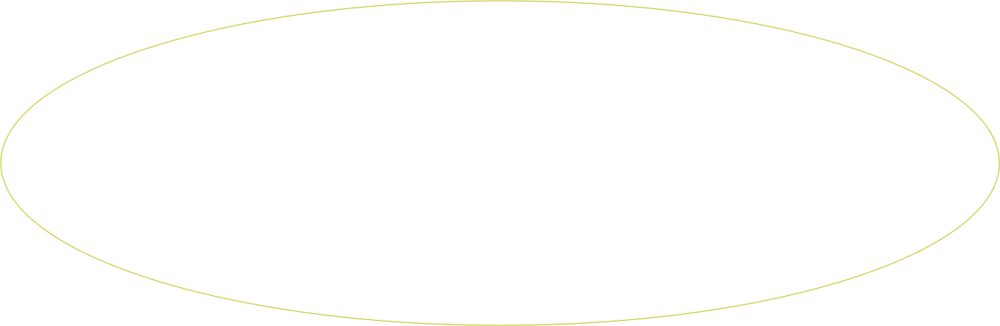
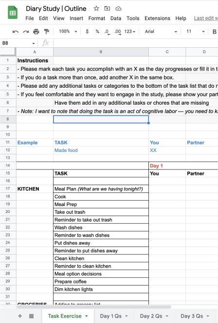
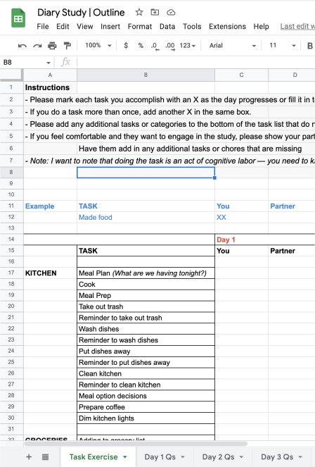

What’s the division of
labor in your life?
Let’s break down your cognitive labor and division of household work between you and your partner.

DIRECTIONS
Answer each question by clicking on the corresponding box. If the cognitive labor is shared equallty, click on
both boxes.
If the task isn’t applicable to you, leave the boxes blank.
If the task isn’t applicable to you, leave the boxes blank.
Take note of any emerging patterns
as you’re answering the questions. Are these chores divided intentionally?
The list might feel long but this is a fraction of home labor tasks performed. If you have children, the
work compounds.
 

I conducted a week-long diary study and exercise where I had individuals track their household labor. After
each day, they then reflected on their cognitive labor and division of household labor.
Here is a link to the diary study if you are curious about tracking your own daily labor.